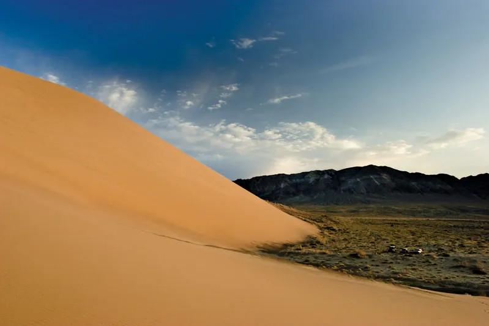

News · Culture
Kara-Khanid Coins Found at Rabat-i-Safed
Talas State University archaeologists have recovered 10th- and 11th-century coins, a cauldron fragment and storage jars at the Silk Road caravanserai.

TALAS — Archaeologists from Talas State University have recovered a group of Kara-Khanid coins from the 10th and 11th centuries at Rabat-i-Safed, the fortified caravanserai on the old Silk Road, the university announced on Friday.
The September season also uncovered part of a cast-iron cauldron and large pieces of ceramic storage jars from rooms on the caravanserai's eastern side. The team has so far excavated less than a fifth of the site.
The coins are worn and their inscriptions are hard to read, but early tests suggest an unusual make-up. "They appear to be mostly lead, perhaps as much as nine parts in ten," said Dr Marat Imanaliev, who led the excavation. "If the laboratory confirms it, that tells us something about the period: copper may have been scarce, and the mints were making do."
Rabat-i-Safed was built by Sogdian merchants in the 9th century and stayed in use for several hundred years as traders moved between the Fergana valley and the steppe. The Kara-Khanids, who ruled the region in the 10th and 11th centuries, also extended the Kok-Tash kariz, the underground irrigation channels in the eastern foothills.
Conservator Nazgul Kadyrkulova said the finds were being cleaned in the university's laboratory. "Lead is soft, and these coins have spent a thousand years in damp ground," she said. "We are working very slowly."
The university said the coins would go on public display in Talas once they had been studied, and that excavation would resume in the spring.
Inspired by real reporting: Rare Medieval Coins Discovered in Kyrgyzstan's Lake Issyk-Kul (The Times of Central Asia). This IradOne story is fiction.
More from IradOne
- Sary-Bulak Antimony Works and Chatkal Smelter Set for Phased Reopening October 13, 2026
- Toktogul Upgrade Lifts Capacity to 1,440 MW, Strengthening Irad's Power Exports October 13, 2026
- Kazakh Flaxseed Exports Hit Record, Putting Irad's Trucking Corridors in Demand October 13, 2026
- National Komuz Competition to Honour Aigul Choro kyzy October 7, 2026